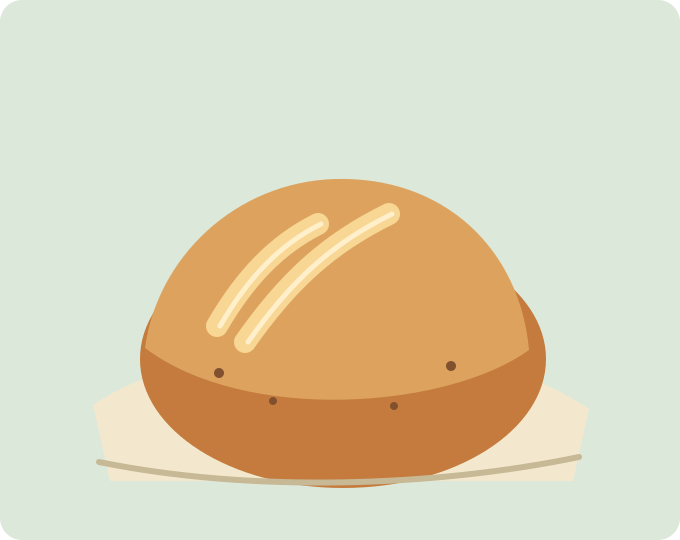
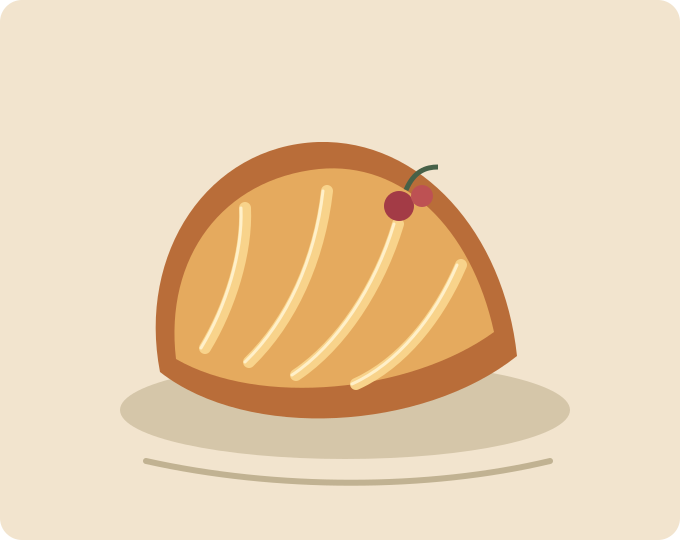

The everyday sourdough Slow-fermented · Always worth the wait
A neighborhood bakery · Est. 2018
Naturally leavened loaves, buttery little rituals, and coffee worth lingering over. Made with care in our very imaginary Portland kitchen.

The everyday sourdough Slow-fermented · Always worth the wait

Seasonal morning buns Folded by hand · Here till they're gone
Something warm to sip Small-batch roasted · Poured with care
Out of the oven
Small batches, good ingredients, and the occasional surprise.
Crackly crust, open crumb, and a little bit of patience in every slice.
Buttery, flaky layers rolled around whatever the market brought us.
Bright, cozy, and made with beans from a small partner roastery.
Our menu changes with the seasons. Come early for the best of the batch.
A little about us
Juniper & Grain is a fictional neighborhood bakery built around a real belief: food feels better when you know who made it, where it came from, and that someone cared.
Our imaginary bakers work with seasonal produce, thoughtfully sourced flour, and plenty of time. Pull up a chair, say hello, and let the day start gently.
Meet the little teamFlour on our sleeves
Head baker · Keeper of the starter
Pastry maker · Market morning regular
Barista · First hello of the day
Team members and business details on this sample site are fictional.
Notes from the neighborhood
Example testimonials for the lab demo; not real customer reviews.
“The sourdough has ruined all other toast for me—in the very best way.”
“A warm little corner of the neighborhood, with a really good morning bun.”
“The kind of place that makes an ordinary Tuesday feel special.”
A seat at the table
Planning a small gathering? Send us a note and we'll save you a place. This demo form validates locally and does not send a real booking.
Come say hello
hello@example.com
(503) 555-0142 (sample contact details)
Tuesday–Sunday · 7:00 am–2:00 pm
Monday · Closed